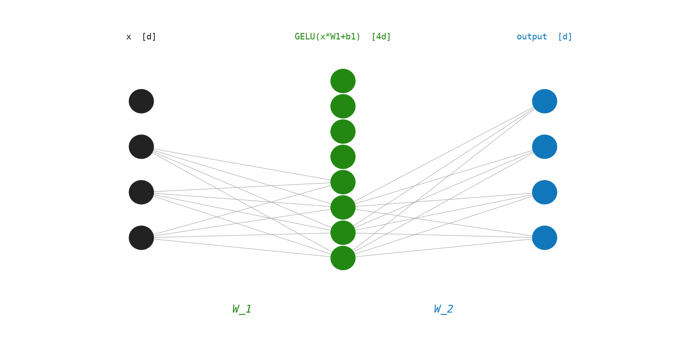
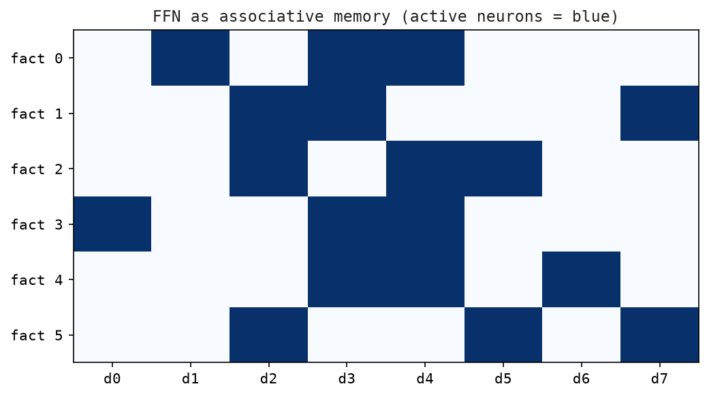

8 Feed-Forward Network — The Model’s Memory
“Calculation requires not the gathering of quantities alone but their pondulation — each figure examined in its own right before being passed forward.”
— Charles Babbage
After multi-head attention has blended information across positions, each token’s vector passes through a feed-forward network (FFN). This is a simple two-layer MLP — the same network, applied independently to every position.
While attention does the routing (mixing information across tokens), the FFN does the processing (transforming each token’s representation). Experiments by Geva et al. (2021) showed that the FFN layers act as “key-value memories” — the first layer’s neurons trigger on specific input patterns, and the second layer retrieves associated information.
8.1 The Idea
Attention is about communication — each token collects information from other tokens. The feed-forward network is about computation — each token processes what it just collected, entirely on its own.
After attention, every token’s vector has been updated with context from the surrounding words. The FFN now takes each updated vector and runs it through a private transformation: expand it into a much larger space, filter it through a non-linearity that decides which features are “active,” then compress it back to the original size. No information crosses between tokens here — every position is handled independently with the same set of weights.
Why expand and then compress? The expansion gives the model room to express a large number of potential features at once. The non-linearity then selects which combinations matter and switches the rest off. The compression packages the result back into the model’s standard vector size.
This expand-filter-compress pipeline is where most of the model’s factual knowledge lives. Research has shown that individual neurons in the FFN’s expanded space can be associated with specific concepts (“Paris,” “past tense,” “chemical element”).
The same FFN weights are applied to every token position in the sequence: position 1 and position 100 go through identical transformations. Only attention sees position.
8.2 The Math
Math Minute — ReLU and GELU
A non-linearity is a function that makes the network capable of learning complex patterns beyond linear mappings.
ReLU(x) = max(0, x) — simple: negative values → 0, positive values unchanged.
\(\operatorname{GELU}(x) = x \cdot \Phi(x)\) where \(\Phi\) is the standard normal CDF. GELU is smooth and probabilistic. GPT uses GELU. LLaMA and most modern models use SwiGLU, a gated variant.
Sigmoid(x) = 1/(1+e⁻ˣ) squashes any real number to (0,1). Used in gates.
For a sequence input \(X \in \mathbb{R}^{T\times d}\), the FFN applies identically to each row:
\[ FFN(X) = \operatorname{GELU}(X W_1 + \mathbf{1}\cdot b_1^{\top}) W_2 + \mathbf{1}\cdot b_2^{\top} \]
Breaking it down:
\[ \begin{aligned} H &= X W_1 + \mathbf{1} b_1^{\top} \in \mathbb{R}^{T \times d_{\text{ff}}} && \text{(expand)} \\ H' &= \operatorname{GELU}(H) \in \mathbb{R}^{T \times d_{\text{ff}}} && \text{(activate)} \\ Y &= H' W_2 + \mathbf{1} b_2^{\top} \in \mathbb{R}^{T \times d} && \text{(contract)} \end{aligned} \]
Parameter count:
- \(W_1\): \(d \times d_{\text{ff}} = d \times 4d = 4d^2\)
- \(W_2\): \(d_{\text{ff}} \times d = 4d^2\)
- Total: \(\approx 8d^2\) — twice the parameter count of all attention weight matrices combined!
8.3 GELU Deep Dive
The exact GELU formula is:
\[ \operatorname{GELU}(x) = x \cdot \frac{1}{2} \cdot \left[1 + \operatorname{erf}\!\left(\frac{x}{\sqrt{2}}\right)\right] \]
A fast approximation (used in practice):
\[ \operatorname{GELU}(x) \approx 0.5 \cdot x \cdot (1 + \tanh(\sqrt{2/\pi} \cdot (x + 0.044715 \cdot x^3))) \]
Key behaviors:
GELU(0) = 0- For large positive
x: \(\operatorname{GELU}(x) \approx x\) (passes through) - For large negative
x: \(\operatorname{GELU}(x) \approx 0\) (suppressed) - Smooth everywhere — gradient flows through during training
8.4 The Matrix: Worked Example
Let T = 2, d = 4, \(d_{\text{ff}} = 8\).
Input (after attention):
X = [[ 0.5, 1.2, -0.3, 0.8],
[-0.1, 0.7, 0.9, -0.4]] (2×4)Let’s trace just row 0 of X: x = [0.5, 1.2, -0.3, 0.8]
Step 1 — Expand: \(h = x W_1\)
h = [1.1, -0.4, 0.8, 2.1, -0.3, 0.6, 1.5, -0.8]Step 2 — GELU:
GELU(1.1) ≈ 0.95
GELU(-0.4) ≈ -0.12
GELU(0.8) ≈ 0.64
GELU(2.1) ≈ 2.06
GELU(-0.3) ≈ -0.11
GELU(0.6) ≈ 0.44
GELU(1.5) ≈ 1.40
GELU(-0.8) ≈ -0.17
h' = [0.95, -0.12, 0.64, 2.06, -0.11, 0.44, 1.40, -0.17]Step 3 — Contract: \(y = h' W_2\)
y ≈ [0.7, 1.1, -0.2, 0.9]The output y is a transformed version of the input vector — same dimensionality, different values. The transformation was learned to improve next-token prediction.
Figure Figure 8.1 shows the feed-forward network expanding the hidden dimension, applying GELU, and contracting back to model width.

Figure Figure 8.2 shows the FFN interpretation as associative memory, with keys and values stored in its weight matrices.

8.5 The Code: FFN in Python
GELU is the activation function used in GPT-2. For large positive \(x\), GELU approaches \(x\) — the value passes through. For large negative \(x\), it approaches 0 — the value is suppressed. gelu_matrix applies the scalar GELU to every element of a matrix.
def sigmoid(x: float) -> float:
return 1.0 / (1.0 + math.exp(-x))
def relu(x: float) -> float:
return max(0.0, x)
def gelu(x: float) -> float:
scale = math.sqrt(2.0 / math.pi)
return 0.5 * x * (1.0 + math.tanh(scale * (x + 0.044715 * x**3)))
def gelu_matrix(matrix: Matrix) -> Matrix:
return [[gelu(value) for value in row] for row in matrix]add_bias broadcasts a bias vector \(b\) across all rows of a matrix \(M\).
def add_bias(matrix: Matrix, bias: Vector) -> Matrix:
return [[value + bias[j] for j, value in enumerate(row)] for row in matrix]FeedForward holds the four parameters; make_feed_forward allocates them — \(W_1\) expands the model dimension \(d\) to \(4d\); \(W_2\) contracts it back.
@dataclass
class FeedForward:
w1: Matrix
b1: Vector
w2: Matrix
b2: Vector
def make_feed_forward(d_model: int, rng: random.Random) -> FeedForward:
d_hidden = 4 * d_model
return FeedForward(
w1=random_matrix(d_model, d_hidden, rng),
b1=[0.0] * d_hidden,
w2=random_matrix(d_hidden, d_model, rng),
b2=[0.0] * d_model,
)feed_forward composes the two linear layers with GELU: expand → activate → contract.
def feed_forward(x: Matrix, params: FeedForward) -> Matrix:
hidden = gelu_matrix(add_bias(matrix_multiply(x, params.w1), params.b1))
return add_bias(matrix_multiply(hidden, params.w2), params.b2)Demo. Run with python3 src/python/chapter_demos.py:
def chapter_08(seed: int = 8) -> dict[str, object]:
rng = random.Random(seed)
x = random_matrix(3, 8, rng)
params = make_feed_forward(8, rng)
output = feed_forward(x, params)
return {"output_shape": (len(output), len(output[0]))}8.6 The FFN as a Key-Value Memory
A striking insight from Geva et al. (2021): the FFN layers act like associative memories.
The first layer \(W_1\) stores “keys” — each column of \(W_1\) is a pattern to match against the input. GELU fires when the input matches. The second layer \(W_2\) stores “values” — the corresponding information to retrieve.
Concretely:
\[ h = \operatorname{GELU}(x W_1) \]
where each component \(h_k \approx x \cdot W_1[:,k]\) — a dot-product “match score” for pattern \(k\). High \(h_k\) means “input matches pattern \(k\).”
\[ y = h W_2 \]
Pull out value \(W_2[k,:]\) weighted by \(h_k\).
This means the model can learn: “if the input contains patterns related to France, activate neuron 47, which retrieves ‘Paris’ associations.”
8.7 Key Takeaways
- The FFN is a two-layer MLP applied identically to every position: \(FFN(x) = \operatorname{GELU}(xW_1 + b_1) W_2 + b_2\).
- The inner dimension \(d_{\text{ff}} = 4d\) means the FFN has more parameters than the attention layers.
- GELU is a smooth activation function that “softly gates” negative values.
- The FFN acts as an associative memory: first layer matches patterns, second layer retrieves associated information.
- No cross-position communication happens here — that’s attention’s job.
What’s next? We now have all the pieces: attention that mixes information, and an FFN that processes each token’s vector. How are they wired together? With residual connections and layer normalization to form the transformer block — Chapter 7.